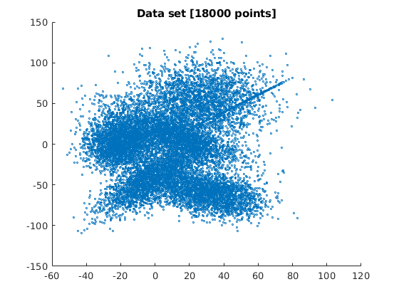
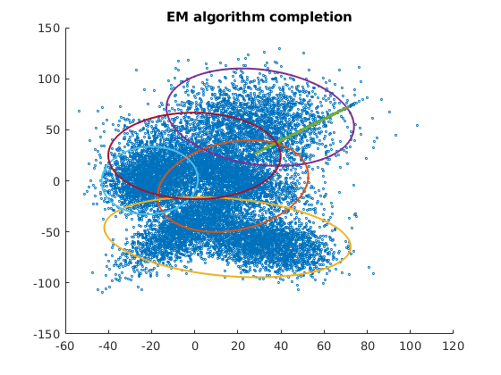

Contents
%%Skylar Tamke - Project 3 EM Clustering % I have estimated 6 clusters for this set of data. This parameter can be % changed easily by modifying the variable M. When using the algorithm the % initial conditions are very key to how % successful the algorithm is. If the starting conditions are bad the % algorithm will cluster badly for a 2d array. clc clear close all warning('off','all') %number of clusterings M = 6; %load data file load("data.mat"); %initialize data set x = data; [N, d] = size(x); mean = zeros(M,2); pi_val = zeros(1,M); pi_val(:) = 1/M; %plot Data scatter(data(:,1),data(:,2),3); hold on title("Data set [18000 points]") %automatically finds clusters based on the kmeans method, initial guess [idx1,C1] = kmeans(data,M); % C1 = rand(6,2)*100 %getting the mean for each point. initially for i = 1:M mu(i,:) = C1(i,:); end % scatter(C1(:,1),C1(:,2),100) % initialize cov values for each Gaussian (M) scalable for m = 1:M Em(:,:,m) = eye(2); end % creating booleans to use when determining if continued EM is needed boolean = 1; covarience_threshhold = .01 loopcount = 0
covarience_threshhold =
0.0100
loopcount =
0
 Algorithm
The algorithm will run until the end condition is met
while( boolean)
loopcount = loopcount + 1;
% Expectation algorithm step
cond_sum = zeros(N,1);
for i = 1:N
% first the probability that the data point is in a certain cluster
for m=1:M
% cond_prob(i,m) = mvnpdf(x(i,:),mu(m,:),Em(:,:,m));
cond_prob(i,m) = (((2*pi)^(d/2))*((det(Em(:,:,m)))^(-.5))) ...
* exp((-.5*(x(i,:)-mu(m,:))*(inv(Em(:,:,m)))*(x(i,:)-(mu(m,:)))'));
end
for m =1:M
cond_sum(i) = cond_prob(i,m)*pi_val(m) + cond_sum(i);
end
% calculate the expectation of each data point
for m=1:M
z(i,m) = cond_prob(i,m)*pi_val(m)/cond_sum(i);
end
end
%getting rid of any NaNs, which are the result of the
%conditional_probabilities that ended up being zero.
for i = 1:N
for m = 1:M
if(isnan(z(i,m)))
z(i,m) = 0;
end
end
end
%resetting this sumation so that algorithm doesn't run away
cov_num = zeros(2,2,6);
% % % M step
for m = 1:M
z_sum = sum(z(:,m));
for i = 1:N
cov_num(:,:,m) = z(i,m) * (x(i,:) - mu(m,:))' * (x(i,:) - mu(m,:)) + cov_num(:,:,m);
end
%calculate new covarience matrices
Em(:,:,m) = cov_num(:,:,m)/sum(z(:,m));
%record old means so we can compare to check convergence
old_mu = mu;
for i = 1:N
mu_num(i,:) = z(i,m) * x(i,:);
end
sum_num = sum(mu_num);
%calculate new means
mu(m,:) = sum_num/(z_sum);
%calculate new prior probabilities
pi_val(m) = z_sum/N;
end
Threshdold difference
This is where convergence of EM properties are checked to see if the algorithm is successfull or not
%reset convergence check mu_difference = 0; for m = 1:M mu_difference = abs(old_mu(m) - mu(m)) + mu_difference; end if(mu_difference < covarience_threshhold) boolean = 0; end
Centriod plot
plot each centriod change, commented out for publish scatter(mu(:,1),mu(:,2),50)
end
loopcount
loopcount =
9
Ellipse plotting
this is a function linked for the class to use to
for m = 1:M error_ellipse(Em(:,:,m),mu(m,:)) end title("EM algorithm completion") %do not use % conditional prob. of generating xi given mth model % easyCond(i,m) = (((2*pi)^(d/2))*((det(Em(:,:,m)))^(-.5))) ... % * exp((-.5*(x(i,:)-mu(m,:))*(inv(Em(:,:,m)))*(x(i,:)-(mu(m,:)))')); %using the function